Each of these
goals can then be broken down further into their respective subgoals:
Recognise change in immediate
forecast
Subgoals:
-Check high wind change - identify if there has been a
change in the high wind situation in the immediate forecast
-Check fog change - identify if there has been a
change in the presence of fog in the immediate forecast
-Check temp below zero - identify if there has been a
change in the presence of below zero temperatures in the immediate
forecast
-Check high rain - identify if there has been a
change in the presence of high rain in the immediate forecast
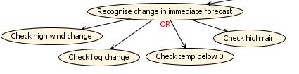
Figure 5: Recognise change in
immediate forecast
Recognise forecast discrepancy
Subgoals:
-Check wind - identify a discrepancy of 5
knots or more between the forecast and actual reading
-Check
fog - identify a
discrepancy in the presence of fog between the forecast and actual
reading
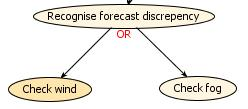
Figure 6: Recognise forecast discrepancy
Recognise high wind situation
Subgoals:
-Check high wind - identify wind speeds of greater
than 30 knots
-Check
really unexpected, increasing wind - identify wind that is greater
than 5 knots, is significantly higher than forecast and is increasing
-Check
high, unexpected, increasing wind - identify wind that is greater
than 20 knots, higher than forecast and is increasing
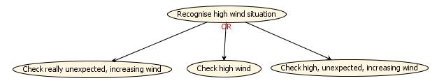
Figure 7: Recognise high wind
situation
Create Warning -
create a warning with an
appropriate message
Send
to Users -
determine
which users are subscribed and send the warning to them
Display
Warning -
display the
warning to the user via the GUI.
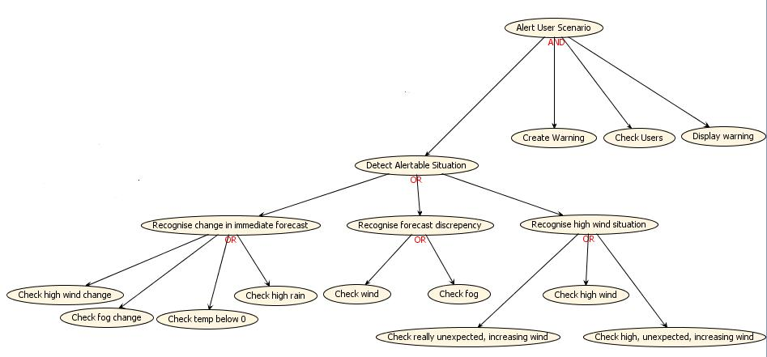
Figure 8 - Alert User
goal hierarchy
Subscribe
User
back to top
The subscribe user goal is
relatively simple and can be split into two subgoals:
Make
Subscription - create a
subscription and send it to the appropriate airport
Update Subscriptions
Beliefs - store the
subscription in an appropriate data store.
System Roles
back to top
The next stage of the process is to
group similar goals together into roles. Each role should be limited in
scope, and be able to be described fully be 1-2 sentences. Grouping is
done using the System Roles diagram. Select a tole icon, click on the
diagram pane, and provide a suitable name. Then select the goal icon,
and one by one, add goals, and connect them to the role icon using the
arrow. Do this for each grouping of goals. It is not necessary to
include every goal
from
the goal hierarchy. If all of the sub goals are related to the same
role, it will suffice to simply add the parent goal. Likewise, if all
the sub-goals are displayed amongst various roles, it is not necessary
to add the parent goal anywhere. The actions and percepts identified in
the analysis overview diagram will automatically be placed in this
diagram. Percepts and actions are also part of roles, and should be
linked to a role in the same way as goals. Each percept and action
should be part of some role. They can also be part of multiple roles.
While
at this stage it is not strictly necessary to consider the agents to
which these roles will be allocated, it is a good practice to keep
roles small and specific so that at the appropriate time it is possible
to consider different ways of combining things within agents.
For this system, the following roles were identified:
Obtain AWS data
back to top
This role receives AWS data, both automatically and on request, and updates all necessary storage of this data..
Goals:
-Update AWS beliefs
-Recieve AWS data
-Request AWS data
Actions:
-Request Data
-Subsribe AWS source data
Percepts:
-AWS data
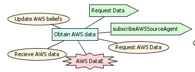
Figure 9: Obtain AWS
data role diagram
Obtain TAF data
back to top This is This role deals solely with receiving an individual forecast,
translating it into the appropriate format and then storing it into an
appropriate data store.
Goals:
-Receive TAF data
-Update TAF beliefs
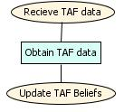
Figure 10: Obtain TAF
data role diagram
Create Forecast
back to top
This roles handles the incoming percept, then splits it and sends individual forecasts to the appropriate locations
Goals:
-Send to airports
Percepts:
-TAF data
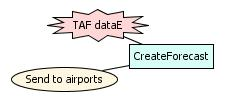
Figure 11:
Create forecast role diagram
Check for High Wind
back to top
This role detects high
wind situations, which involves checking the AWS readings and TAF
forecasts for the presence of high wind, really unexpected, increasing
wind and high, unexpected, increasing wind.
Goals:
-Check for High wind
-Check for really unexpected, increasing wind
-Check for high, unexpected, increasing wind
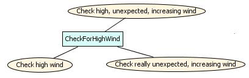
Figure 12: Check for
High wind role diagram
Check for forecast
discrepancy
back to topThis
role detects a
discrepancy in the presence of fog or high wind between forecasts and
actual readings by comparing the AWS readings and TAF forecasts.
Goals:
-Check for fog
-Check wind
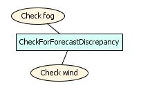
Figure 13: Check for
forecast discrepancy role diagram
Check for change in
immediate forecast
back to top
This role checks the current and recent TAF forecasts for a
change in the immediate forecast in the areas of high wind,
temperatures below zero, high rain or the presence of fog.
Goals:
-Check for high wind change
-Check for temp below zero change
-Check for high rain change
-Check for fog change
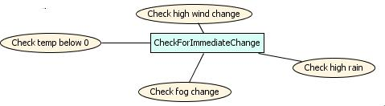
Figure 14: Check for
change in immediate forecast role diagram
Create warning
back to top
This role is used to create a relevant warning message, and pass
it on to the appropriate users by checking the user subscriptions.
Goals:
-Create Warning
-Check users
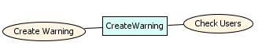
Figure 15: Create
warning role diagram
As with the Obtain
TAF Data roles, the subscription process can logically be broken into
two roles. One role to accept incoming subscriptions from a user,
process them and pass to the appropriate airport. A separate role could
be created to handle the subscriptions for a specific airport and store
in a relevant datastore.
Add
Subscription
back to top
This role deals only with storing the subscriptions for a particular airport into an appropriate data store.
Goals:
-Update
Subscriptions beliefs
back to top
Subscribe to airport
This role must handle the user subscription from the user and pass it to the appropriate airport. and passing it to the
appropriate airport agent.
Goals:
-Make subscription
Percept:
-User subscription
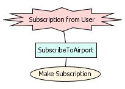
Figure 17: Subscribe to
airport diagram
Display Warning
back to topThis role covers displaying the warning on the screen so
that it can be viewed by the user.
Goals:
-Display warning
Actions:
-Show warning
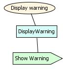
Figure 18: Display
Warning role diagram
Together, this creates the following System Roles diagram:
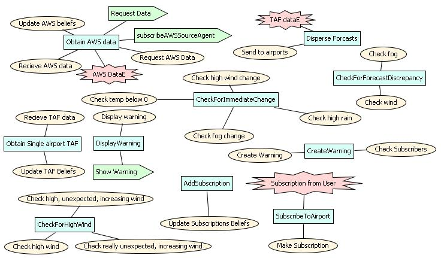
Figure 19: Complete
System Roles Diagram
For each of
the roles identified above it is necessary to fill in the relevant
fields in the descriptor of the role.
An example is given below:
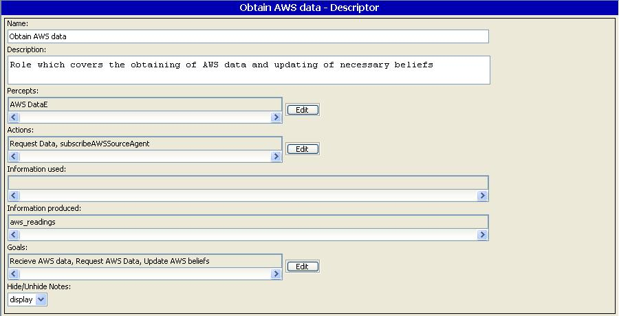
Fig 42: Example Role descriptor
Scenario Specification
At
this point in the design process it is necessary to return to the key
scenarios we identified earlier and add in the information we have on
roles. This will also help us to determine the data stores which will
be required by the system. We will now look at this process for the
Obtain TAF data scenario.
By double clicking on the Obtain TAF
Data scenario in the Scenario Diagram we can see the following steps
already place in the Scenario Dialog:
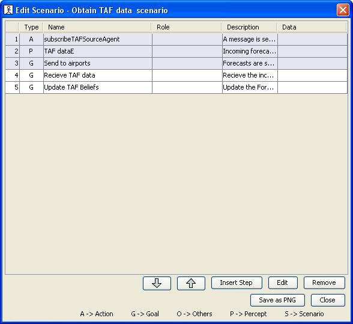
Figure 46: Scenario Dialog for Obtain TAF data before role descriptors are added.
For
each of the steps we will identify the role that the step is associated
with. In the System roles section above we have identified two roles
which are related to the TAF data acquisition process, so it is logical
that each step probably belongs to one of these roles. In order to
assign a role to a step, select that step in the list and then click
the "Edit" button. This will bring up a Edit Step dialog as shown below.

Figure 47: Editing a step.
From
this dialog it is possible to edit the step description, as well as
identify the data and roles it is associated with by clicking the
appropriate edit button. By examining our role descriptions in the
previous sections we can determine which steps logically belong to each
role and assign them:
| Type | Step | Role |
| Action | SubscribeTAFSourceAgent | Create Forecast |
| Percept | TAF data Percept | Create Forecast |
| Goal | Send to Airports | Create Forecast |
| Goal | Receive TAF data | Obtain TAF data |
| Goal | Update TAF beliefs | Obtain TAF data |
Another important detail to add to the Scenario descriptors is any data
which will be read or written by the step. This helps to identify which
types and instances of data stores will be required. Note that there is
a difference between data
types and data
instances.
A data type defines the fields and queries that will be used to store
and access the data. However there may be many data instances for any
given data type. For example an AWS data type could be defined with the
necessary fields and queries to store AWS readings in a suitable
format. Many agents could then create their own instance of this data
type and store their own beliefs inside. Identifying the data types
which will be used helps to determine how the roles will
be grouped into agent types.
From the Obtain TAF data example given above each step must be
considered in regards to what data it would require access to. In this
example, only the final step of the scenario requires any data access
as it will be required to write to a forecast data store of some
description. In much the same way as assigning a role to a step before,
we can assign a datastore to a step. By clicking Edit with the step
selected we are able to edit the data which is written to by the step.
However as we are yet to define any datastores, we will enter an
appropriate name to create a new datastore. This datastore will then be
propogated down to lower level of the design.
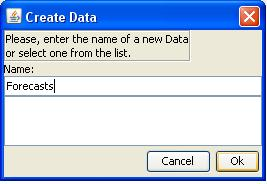
Figure 48: Creating a data store.Exercise: Add in the roles and data stores for each of the other Scenarios you have identified in the Scenario Diagram.Architectural Design
The purpose of the Architectural Design phase is to do the following:
- group roles int o agents (using the Agent Role Grouping diagram)
- introduce and develop agent interactions (using the protocol diagram and system overview diagram)
- specify the details of the data stores in data descriptors
Determining the agent types
back to top
It
is now necessary to consider the different agent types which will be
utilised by the system and assign roles to them. There are several things to consider before
deciding on agent types and role grouping:
Data coupling
While it is certainly
possible to share data between agent types it can make the system more
complex than necessary. Wherever possible, roles which use the same
data stores should be allocated to the same agent type.
Coherence
It is a design decision how many agent
types should be created. However the roles within an agent type should
be related to each other, such that you can give a simple name to the
agent that includes all the roles. The system is usually simpler if you
do combine roles where it is possible, rather than having each role be
an agent. (Agents can later be split into modules, called Capabilities,
many of which may map back to roles).
Cardinality
Sometimes there will be many instances
of a role needed, and sometimes only one. E.g. there would be only one
instance of the role "Create Forecast" but there may be multiple
instances of the role "Obtain AWS data" or "Obtain TAF data" as each
instance, one per airport, will receive its own set of data.Roles
requiring different cardinality should be put into different agents.
With these considerations in mind, the following agent
types were decided upon:
Airport agent
back to top
There will be one Airport Agent per airport. It will
handle the updating of beliefs and all logic relating to the detection
of alerts
Roles:
-Obtain AWS Data
-Obtain TAF Data
-Add Subscription
-Check for High wind situation
-Check for Change in Immediate Forecast
-Check for Forecast Discrepancy
-Create Warning
GUI agent
back to top
There will be one GUI Agent per user. It will handle all interactions
with the user including the handling of user subscriptions and
displaying of warnings.
Roles:
-Subscribe to Airport
-Display warnings
Forecaster agent
back to top
There will be one Forecaster agent in the system. It will handle the
incoming forecasts, split them and send them to the appropriate Airport
Agents.
Each
of the roles defined in the System Roles diagram will already have
propagated down to the the Agent-Role Grouping diagram. To create a new
Agent type, click on the Agent tool and then click in the Agent-Role
Grouping diagram. Using the edge tool connect each new agent type with
the appropriate roles as determined above to produce the following
diagram.
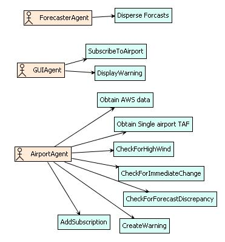
Figure 23: Agent-role grouping
diagramFor
each of the agents it is appropriate to fill in all of the relevant
fields in the agent descriptor. An example of this is shown below:

Figure 43: Agent descriptor diagram.
Neither the Agent Acquaintance diagram or the Data Coupling diagram are
essential to the design process. They can help with considering
different combinations of agents and roles and can allow you to see how
the system will interact and consider the coherence and flexibility of
the system. The Agent Acquaintance diagram is not editable and only
reflects relationships described elsewhere. While the Data Coupling
diagram allows you to link roles to data stores, this is better done
when describing the scenarios.
Agent Interaction
back to topThe interaction between agents and between agents and the environment is described using the
With the
agent types defined, we must now consider how they will interact with
each other and with the environment. PDT will automatically link the
agents with their interactions with the environment so the actions and
percepts should already be accurate. It is therefore only necessary to
define the interactions between the agents and this can be done using
either individual messages or through protocols. Protocols group
messages in a single conversation together and show the legal sequence
of message exchanges. When there are several messages relating to the
same conversation, it is better to use a protocol and when there is
only a single message which is sent from one agent to another this can
simply be put on the diagram on its own.
Protocols can be created by clicking on the protocol icon and adding it
into the diagram. Doubling clicking on the protocol will open an
editing window in which the protocol can be described using AUML2. AUML2 is described in this paper: Michael Winikoff.
Defining syntax and providing tool support for Agent UML using a textual
notation,
International Journal Agent-Oriented Software Engineering, Vol. 1, No.
2, pp.123-144, 2007. To specify a protocol, enter text into the text
area and then click "Save". Clicking on the Diagram tab will then show
the protocol in a graphical format. The MDP panel is obsolete and can
be ignored.
There are three interactions which need to take place between agents.
For each of them, it is necessary to identify the actors and agents
involved and each of the messages which will need to be sent. This
information can then be used to create the protocol diagram.
Data Retrieval
Both the airport agent and the forecaster agent need to subscribe to
the appropriate data sources.
When the forecast data arrives at the forecaster agent, it then needs
to be sent to the individual agents.
There is the optional ability to send a request for AWS data at any
time.
Agents:
-Airport agent
-Forecaster agent
Actors:
-Airport sensors
-Forecaster actor
Actions:
-AWS subscription - sent from Airport
Agent to Airport sensor
-TAF subscription - sent from Forecaster
agent to Forecaster
-AWS data request - sent from Airport
Agent to Airport sensor
Percepts:
-AWS data - sent from Airport sensor to
Airport agent
-TAF data - sent from Forecaster to
Forecaster agent
Messages:
-Forecast - sent from Forecaster agent
to Airport agent
From these elements we can produce the following AUML2:
start Data retrieval
actor A Airport Sensor
agent B AirportAgent
actor C Forecaster
agent D ForecasterAgent
action B A subscribeAWSSourceAgent
action D C subscribeTAFSourceAgent
box loop
box opt
action B A AWSRequest
end opt
percept A B AWS DataE
percept C D TAF dataE
message D B ForecastE
end loop
finish
Which will result in the following protocol diagram:
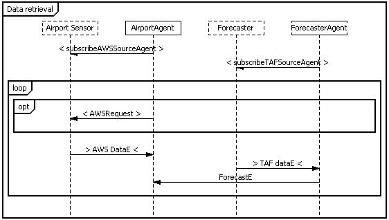
Figure 24: Data retrieval protocol diagram
Subscriptions protocol
back to top
The user actor will click on the GUI to subscribe to an
airport
This subscription will get passed on to the appropriate airport agent
Actors:
-User actor
Agents:
-Airport agent
-GUI agent
Percepts:
-Subscription - sent from User actor to
GUI agent
Messages:
-Subscription - sent from GUI agent to
airport agent
From these elements we can produce the following AUML2:
start SubscriptionsProtocol
actor A User
agent B GUIAgent
agent C AirportAgent
percept A B Subscription from User
message B C SubscriptionE
Which will produce the following protocol diagram:
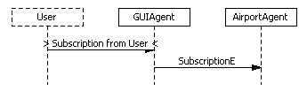
Figure 25: Subscription
protocol
Warnings Protocol
back to top
A warning will be created by an Airport Agent and sent to
the GUI agent
The warning will then be displayed on the screen to the user.
Actors:
-User
Agents:
-GUI agent
-Airport agent
Actions:
-Warning
Messages:
-Warning
From these elements we can produce the following AUML2:
start Warnings
actor A User
agent D GUIAgent
agent E AirportAgent
message E D WarningE
action D A Show Warning
Which will produce the following protocol diagram:
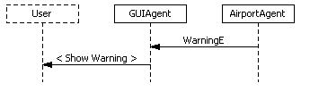
Figure 26: Warnings
protocol.
Message Descriptors
For each of the messages we have
created, it is important to fill in the descriptors with as much detail
as possible. This allows each agent to be implemented separately, using
the protocol and message specifications to ensure they will work
together correctly. This means it is important to describe the messages
right down to the fields which they contain.

Figure 50: Message descriptor for ForecastE.
Note the above figure does not show the all the information contained under "Carried Information". The complete text is:
rmit.cs.aopd.datastructures.WeatherDataRecord[]
where WeatherDataRecord contains:
float windStrength;
float temperature;
float rainfall;
boolean fog;
Date dateAndTime;Shared Data
At
this point it is also necessary to describe in more detail any of the
data types which will be shared amongst agents. Like with the message
descriptors, this provides a common specification so that the agents
using the data type can be implemented separately. More detailed
descriptions of non-shared data types can be completed at the Detailed
Design stage.
Detailed Design
In
detailed design we take one agent at a time and specify the internals
of the agent in a manner that is consistent with the roles the agent
has been assigned, and the interface that has been specified with both
the environment and other agents.
Sometimes, as the detailed design
is developed, it becomes necessary to modify aspects of the
architectural design. This should be done as needed, in order to
maintain consistency of the overall system design.
The tasks in detailed design for each agent are:
1) create the agent overview
2) create the overview of any capabilities
3) develop the plan descriptors
4) develop the event descriptors
5) develop the details of any data
There is substantial iteration between all of these steps within a single agent.
The
agent overview diagram is the top level view of the agent internals,
and inherits the interface items (data, percepts, actions and messages)
based on the architectural design. Capabilities and plans are then
added into the diagram in a manner similar to the other diagrams. All
inherited entities must be connected to some capability or plan. New
messages may be created as connections between capabilities or plans.
New data that is internal to the agent, but shared amongst multiple
capabilities/plans can also be added in this diagram.
Each diagram should be kept relatively simple and easy to understand, using hierarchical layers to develop details.
We will look now at the details for each agent.
Airport Agent
The roles associated with the Airport agent are shown below:
-Obtain AWS Data
-Obtain TAF Data
-Add Subscription
-Check for High wind situation
-Check for Change in Immediate Forecast
-Check for Forecast Discrepancy
-Create Warning
From
the System Roles diagram we can identify the goals, actions and
percepts associated with each of the roles which the agent is assigned.
It is envisaged that there
should be some correlation between goals and plans, percepts and
incoming messages, and actions and outgoing messages. This is
not strictly enforced, and plans can achieve more than one goal
and vise versa, more than one plan can be used to achieve the one goal.
The percepts, incoming
messages and actions are automatically added to the diagram as shown
below:

Fig 49: Automatically propogated entities into the airport agent.
Each
of these entities should then be connected to either a plan, or a
modular collection of plans - a capability. In our example, rather than
performing the subscribeAWSSourceAgent action from within a plan, we
will perform it directly at the agent initialisation. Thus in this
specific instance that action will remain unconnected however that
should be considered uncommon.
For each role associated with the
agent, a good guide is to consider whether the goals associated with it
can be achieved using a single plan. If this is the case, then the
single plan can be inserted into the top level overview diagram. If
not, the plans should probably be combined into a capability which is
inserted at the top level diagram and contains all the plans and events
necessary to achieve the role's goals.
You can get a rough
idea of this by looking at the goals associated with the role and how
complicated it needs to be. Of course this may change as you start to
create the plans but is a good starting point.
| Role | Goals | Plan/Capability? |
| Obtain AWS Data | Update AWS beliefs, Receive AWS data, Request AWS data | Capability |
| Obtain TAF Data | Update TAF beliefs, Receive TAF data | Plan |
| Add Subscription | Update Subscriptions Beliefs | Plan |
| Create Warning | Check Subscribers | Plan |
| Check for High wind Situation | Check high wind, Check really unexpected, increasing wind, Check high, unexpected, increasing wind | Capability |
| Check for Forecast Discrepancy | Check wind, Check fog | Capability |
| Check for change in immediate forecast | Check high wind change, Check high rain, Check temp below 0, Check fog change | Capability |
Obtain AWS Data
For each of the plans we should consider the events which will trigger
the plans execution and any events or messages it will post or send.
The data stores which will be read from or written to should also be
identified.
| Goals | Plans | Actions | Percepts | Internal Events | Data |
| Update AWS beliefs, Receive AWS data | UpdateAWSP | | AWS Data | | AWSReadings |
| Request AWS data | RequestAWSP | Request Data Action | | AWS Data Needed | |
A
decision has been made to combine the Update AWS beliefs and Receive
AWS data as it can logically be achieved by the same plan.
From this we can produce the following detailed design:

Figure 28: Obtain AWS data detailed design
Obtain TAF data
As above we can produce the following table based on information provided in the architectural design:
| Goals | Plans | Actions | Percepts | Internal Events | Data |
| Update TAF Beliefs, Receive TAF data | UpdateTAFP | N/A | N/A | ForecastE | forecasts |
As
was done with the AWS data, we can combine the receiving and updating
goals into one plan. This produces the following detailed design:

Figure 29: Obtain TAF data detailed design
This
role relates to subscribing a user to this airport agent so that any
warnings created at the airport are sent to the user. A message will be
sent from the GUI agent associated with the user, so the airport agent
must simply write this to a datastore. Thus we can identify the
following information:
| Goals | Plans | Actions | Percepts | Internal Events | Data |
| Update Subscriptions Beliefs | AddSubscriptionP | N/A | N/A | SubscriptionE | subscriptions |
and the following detailed design:

Figure 30: Add Subscription detailed design
At
this point it is also necessary to consider the Create Warning role as
it has a close relationship with each of the "checking" roles. There is
the potential to combine the Create Warning role with each of these
roles and we must consider the advantages to doing so.
The
Create Warning role consists of two reasonably seperate tasks. First, a
warning must be created with the relevant information included. Second,
the subscriptions datastore must be checked and the warning sent to the
relevant agents. Notice that there is a strong link between the first
task and each of the "checking roles", wherein an alertable situation
must be identified, and then a warning based on that information must
be created. From here there are two possible design options:
a) Keep create warning as a distinct role seperate from each of the checking roles:
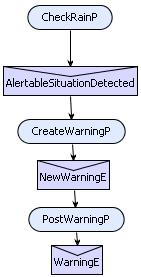
Figure 31: Design a.
b) Combine the "Checking" roles with the Create Warning role:
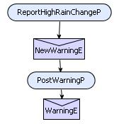
Figure 32: Design b
In
design b, we have combined the checking for high rain with the creating
of a relevant warning into one plan. This makes the design less complex
and logically makes sense so we will go with this design,
The Create Warning Role now only consists of the following:
| Goals | Plans | Actions | Percepts | Internal Events | Data |
| Check Subscribers | PostWarningP | N/A | N/A | NewWarningE, WarningE | subscriptions |
And the design is simply:
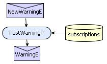
Figure 33: Create Role detailed design
Check for high wind situation
As
described in the Create Warning Role detailed design above, we are
integrating the creation of warnings into the same plan as the one
which will do the checking.
| Goals | Plans | Actions | Percepts | Internal Events | Data |
| Check high wind, Create warning | ReportReallyHighWindP | N/A | N/A | NewDataE, NewWarningE | AWS_readings, forecasts |
| Check really unexpected, increasing wind, Create warning | ReportReallyUnexpectedIncreasingWindP | N/A | N/A | NewDataE, NewWarningE | AWS_readings, forecasts |
| Check high, unexpected, increasing wind, Create warning | ReportHighUnexpectedIncreasingWindP | N/A | N/A | NewDataE, NewWarningE | AWS_readings, forecasts |
From this we can create the following detailed design:
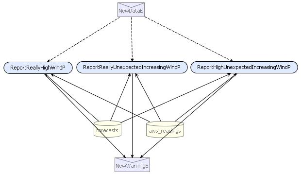
Figure 34: Check High wind situation detailed design.
Similar to checking for high wind, the Check For Change in Immediate Forecast role can be broken down as follows:
| Goals | Plans | Actions | Percepts | Internal Events | Data |
| Check high wind change, Create warning | ReportHighWindChangeP | N/A | N/A | NewDataE, NewWarningE | forecasts |
| Check fog change, Create warning | ReportFogChangeP | N/A | N/A | NewDataE, NewWarningE | forecasts |
| Check temp below zero change, Create warning | ReportTempBelowZeroChangeP | N/A | N/A | NewDataE, NewWarningE | forecasts |
| Check high rain change, Create warning | ReportHighRainChangeP | N/A | N/A | NewDataE, NewWarningE | forecasts |
Which can be used to create the following detailed design:
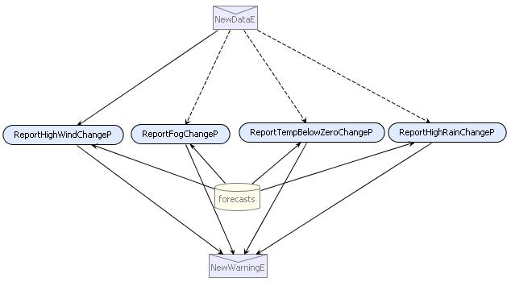
Figure 35: Check for change in Immediate Forecast detailed design
As with the other Checking roles, Check for Forecast Discrepancy can be broken down as follows:
| Goals | Plans | Actions | Percepts | Internal Events | Data |
| Check Wind, Create warning | ReportWindDiscrepancyP | N/A | N/A | NewDataE, NewWarningE | forecasts, AWS_readings |
| Check Fog, Create warning | ReportFogDiscrepancyP | N/A | N/A | NewDataE, NewWarningE | forecasts, AWS_readings |
| Check Trends, Create warning | ReportTempBelowZeroChangeP | N/A | N/A | NewDataE, NewWarningE | forecasts, AWS_readings |
Exercise: Based on the information provided in the table above, create the detailed design for Check for forecast discrepancy.